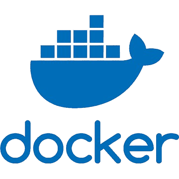
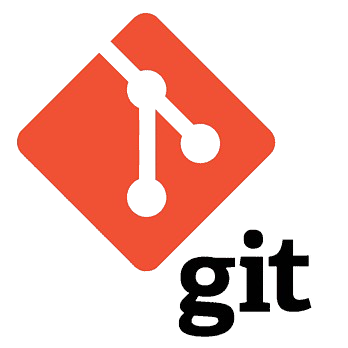

Sobre mí
Programador Junior con formación de
grado superior en Desarrollo de
aplicaciones web. Mi pasión por la
tecnología y la informática me ha
llevado a cursar estos estudios, y mis
ganas de seguir aprendiendo me
empujan a continuar formándome, al
mismo tiempo que busco un empleo en
este campo que me permita desarrollar
mis conocimientos y habilidades, así
como ampliarlos y perfeccionarlos.

